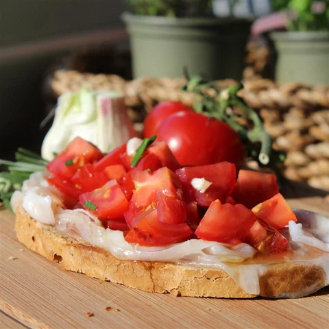

Appetizers And Snacks

Tomato and Ricotta Salata Bruschetta
This tomato bruschetta with ricotta salata is a perfect appetizer for dinner parties and a definite crowd
pleaser.
ingredients
- 1 loaf Italian bread, cut into 1/2-inch diagonal slices
- 6 cloves garlic, halved
- 6 medium tomatoes, seeded and cut into 1/2-inch pieces
- 1 (4 ounce) package ricotta salata, cut into 1/2-inch pieces
- 2 tablespoons extra-virgin olive oil
- 2 tablespoons balsamic vinegar
- 1 tablespoon finely chopped red onion
- 1 tablespoon chopped fresh basil
- ¼ teaspoon salt
- ¼ teaspoon ground black pepper
Steps
- Preheat the oven to 400 degrees F (200 degrees C). Place bread slices on a baking sheet.
- Bake in the preheated oven until toasted, about 5 minutes. Rub 1 side of the bread with the cut garlic.
- Toss tomatoes, ricotta salata, olive oil, vinegar, onion, basil, salt, and pepper together in a bowl. Divide
evenly over bread.